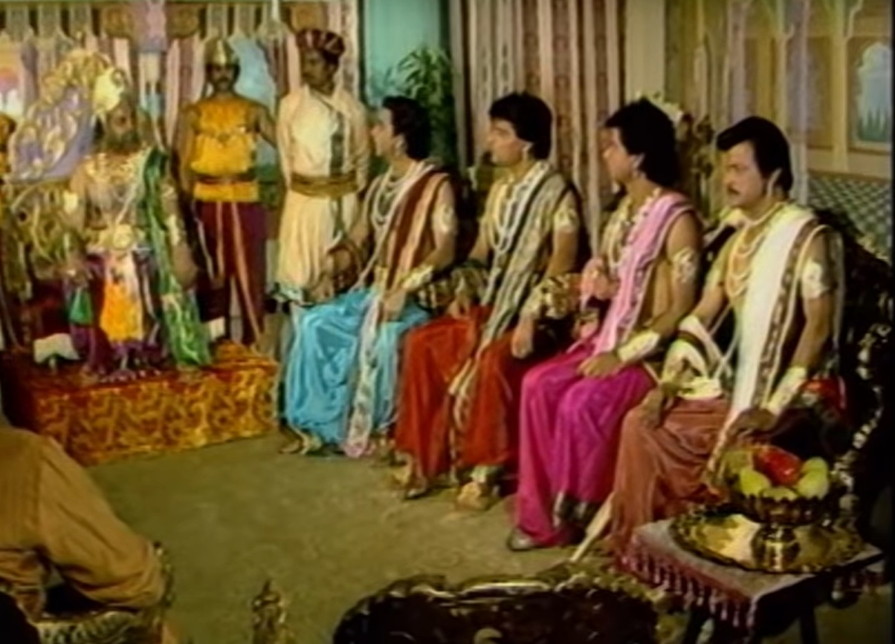
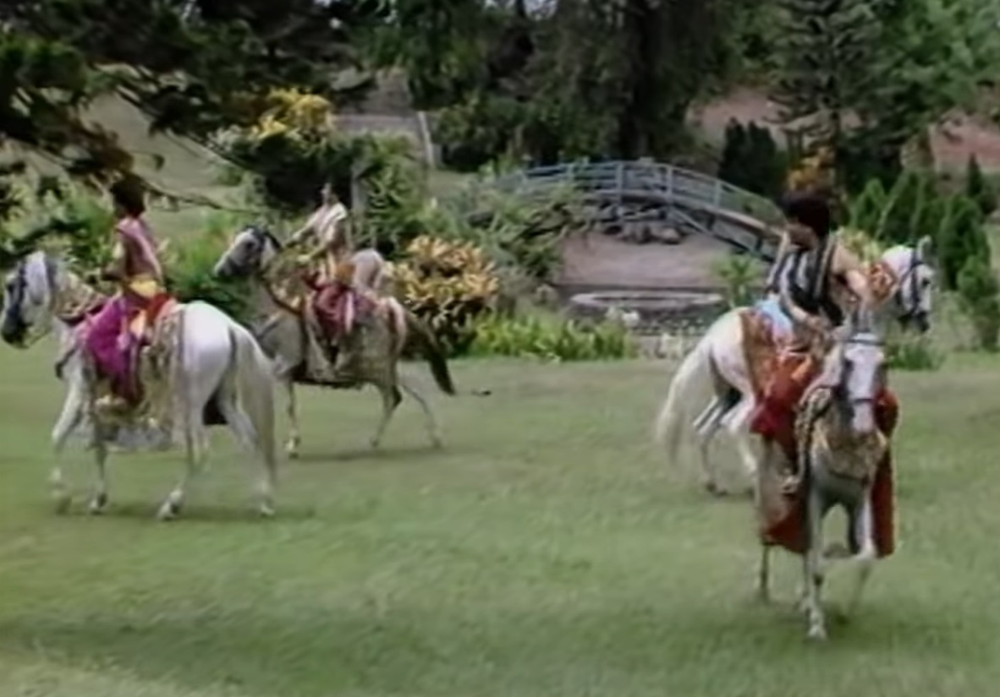
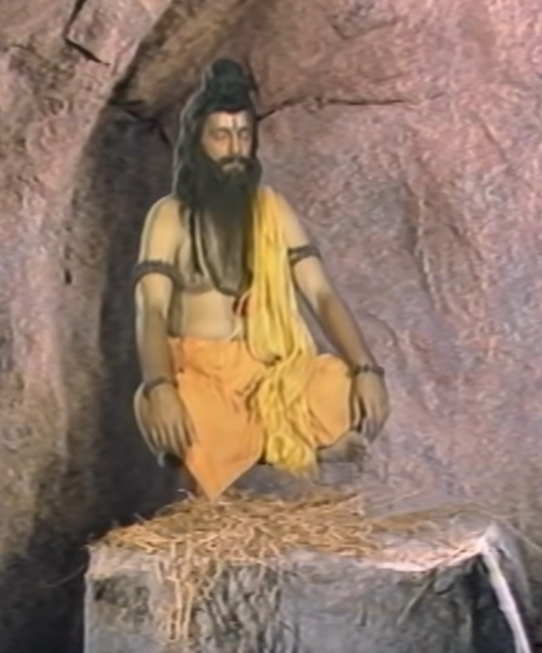
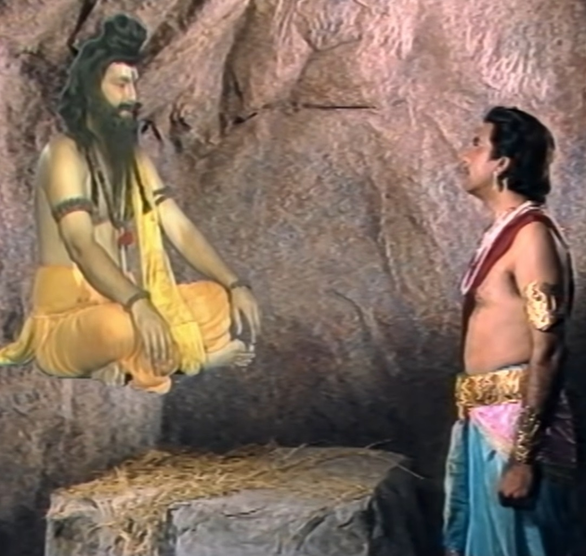
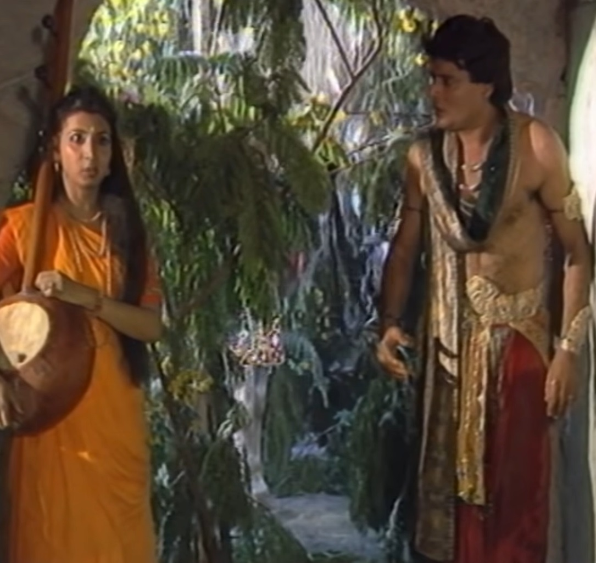

|  |
King Vikram again catches Betal and puts him on his shoulder. He takes him along so that he can hand over Betal to the sage. Betal to Vikram Hear a story to cross the path again. This time to Betal Vikram Listens to the story of four princes in which all four princes are the same. Loved the princess. Among those four, there was a lame prince whose The name was Amar. Amar also wanted to marry the princess but his He stayed behind because he was handicapped. Once the four princes He goes to the princess's father and tells him about his love. So the king tells them to find whatever precious thing they want for the princess. Will make it, he will be married to the princess. in four different directions Let's go. |
 |
| A prince finds a sage in a cave. The prince learns the penance of that sage. The prince agrees to help the monk complete his penance. helps him to complete the auto sadhu gives him a magic mirror through which The prince could see the princess at any time. second prince a blind man When he meets Sadhvi, he tries to restore her eyesight. Guru's instrument puts one's life at risk. blind sadhvi's eyes are fine and she gives the prince a magical veena with which he can never He could also hear the princess's voice from anywhere. |  | The third prince meets a man who had a magic carpet that could fly I could fly. He gives that man a diamond ring and asks for a carpet. The man takes the prince's ring and starts flying along the carpet. So The prince hangs himself on her carpet and a scuffle occurs between them. A snake comes from the tree to their carpet and the prince remains hanging on the carpet. He goes and was about to bite the owner of the carpet when the prince He saves his life from that snake by climbing on the carpet. carpet owner Apologizes to the prince and gives him the carpet. Amar also searches for himself I was trying to find something precious for the princess. road to immortality He meets an old doctor who wants to open a hospital for suffering patients. Wanted a medicine to reduce his age but he was already old. She had to prepare for which she needed a bachelor boy. Amar Vaidya Gets ready to help. Vaidya starts his action And gives the prince a rosary with the help of which he can defeat the Vaidya's enemy, the magician. To make it easier to fight Bhoothnath. |
|  |
The prince chants with the immortal rosary and the physician begins his procedure. gives. In between, the magician Bhootnath comes and tries to stop the Vaidya's action. Tries but fails because of Amar and as soon as When Bhootnath snatches the garland from Amar and breaks it, Bhootnath also gets burnt. The doctor's procedure is completed and he becomes young again after drinking the medicine. Is. The physician gives the prince a flower with which he can cure any disease. Could do. The four princes come together and the first prince Shows them a magic mirror and tells them that they can see the princess at any time. And as soon as he looks at the Pisces Princess in the mirror, he realizes The princess lies on the bed and the physician is saying something to the king, When the other young man listens to them through his veena, he comes to know that The princess is unwell and anything can happen to her. third prince Raj quickly takes them closer to him after making them sit on his carpet. |
 |